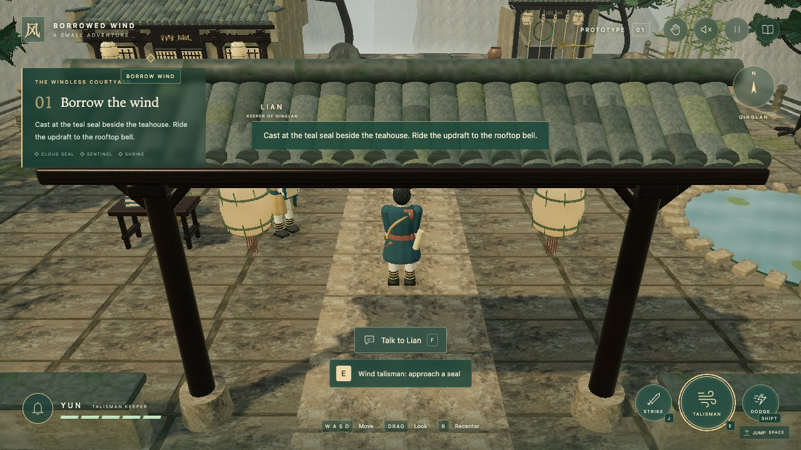

Game design & development
Borrowed Wind
The Names Beneath the Bridge · An original 3D action-adventure

- Role
- Game design & development
- Genre
- 3D action-adventure
- Platform
- Browser · keyboard & touch
- Engine
- Three.js + TypeScript
Game Concept
A wandering talisman keeper arrives to free a borrowed wind and discovers thirty lives hidden beneath a perfectly fulfilled promise. This original browser game brings together third-person exploration, wind-and-sword combat, and a complete five-chapter story.
Player fantasy: become a talisman keeper whose wind magic can reveal a memory, change the environment, or turn a fight.
Core Gameplay Loop
Explore
Walk, jump, and find a route through the courtyard.
Read the World
Find a memory, speak to a character, or identify a wind target.
Act
Cast a talisman, fight a sentinel, or change the environment.
Discover
Uncover the next fragment of the promise and choose how to respond.
Mechanics & Player Feedback
One Power, Several Uses
The wind talisman affects seals, vanes, memories, and sentinels, and reflects hostile embers. The same action connects exploration and combat.
Readable Combat
Sword attacks and dodges complement wind casting. A target ring and contextual prompt identify the next cast before the player commits.
Embodied Input
A palm push casts wind, a held fist attacks, a finger fold-and-reopen dodges, and a pinch interacts. Deliberate holds and releases separate intentions.
World, Levels & Narrative
The original Qinglan courtyard combines Huizhou-inspired architecture with Huangshan-inspired granite, pines, and mist. Modeled roof tiles, latticework, weathered materials, and everyday objects establish an inhabited setting.
Shared shrine-wall bounds keep the architecture, movement rules, and third-person camera consistent. Memory fragments and character conversations connect the player's route through the world to the story.
- 5
- story chapters
- 3
- story decisions
- 2
- final endings
Three decisions lead to two bittersweet endings. Story choices remain deliberate on-screen actions, including when camera controls are enabled.
Game Development
World building. Three.js and TypeScript power original procedural characters, architecture, terrain, effects, and optional synthesized sound. Locally bundled CC0 surface textures support the material detail.
Rendering budget. Touch rendering uses a lower pixel-ratio cap, and bloom is disabled on narrow screens. The game waits for local material maps before enabling play.
Gesture pipeline. MediaPipe hand tracking runs in a worker, keeping inference off the game thread. Camera frames remain in the browser. An optional TouchDesigner bridge provides a second, explicitly selected control route in the local setup.
Playability & Testing
Keyboard and touch controls work without a camera. A replayable guided tutorial separates gesture practice from live actions, and reduced-motion support makes the interaction experiment easier to approach.
Automated coverage exercises story choices, movement, touch controls, and gesture gating. Camera recognition still depends on lighting, occlusion, and hand pose; synthetic tracking tests do not replace real-hand playtesting.